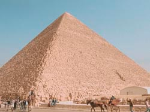
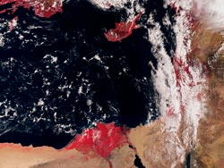
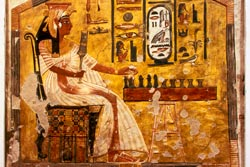
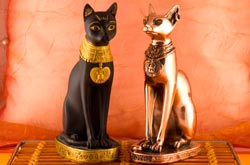
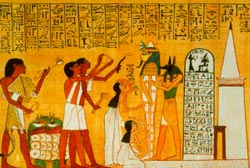
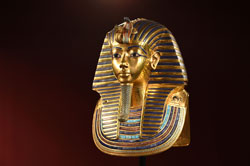

Gran Pirámide de Guiza
Es la única de las 7 maravillas del Mundo Antiguo que sigue en pie. Hay muchos misterios sobre cómo se pudieron colocar en aquella época los más de 2 millones de bloques de piedra (cada uno de más de 2 toneladas).
El Río Nilo
El nilo se tiño de sangre cuando reinaba Ramses II, y a causa de una sequía, apareció un alga tóxica que tiñó las aguas de rojo sangre. Un hecho documentado que debió de impresionar a todo el país.
Las Mujeres Gobernaban
Las mujeres gobernaban Egipto con tanto poder como el de los hombres. Aunque la reina más famosa fue Cleopatra, hubo otras mujeres con más poder. El ejemplo más importante es el de la fabulosa Hatshepsut, hija de Tutmosis I.
Gatos
Veneraban muchos animales, pero el más sagrado era el gato. Matar uno estaba penado con la muerte. En el caso de que el animal muriera por causas naturales, los miembros de la familia se afeitaban las cejas en señal de duelo.
Luto
El luto era representado por el color blanco. El negro era símbolo de suerte ya que, cuando el Río Nilo bajaba con ese color oscuro, significaba que venía cubierto de limo tras una crecida, por lo tanto, dejaría la tierra fértil.
Tutankamón
Tutankamón reinó durante pocos años y no hizo nada destacable, entonces ¿por qué es tan conocido? Por el hallazgo de su tumba y su tesoro, que permaneció alejado de los saqueadores.
